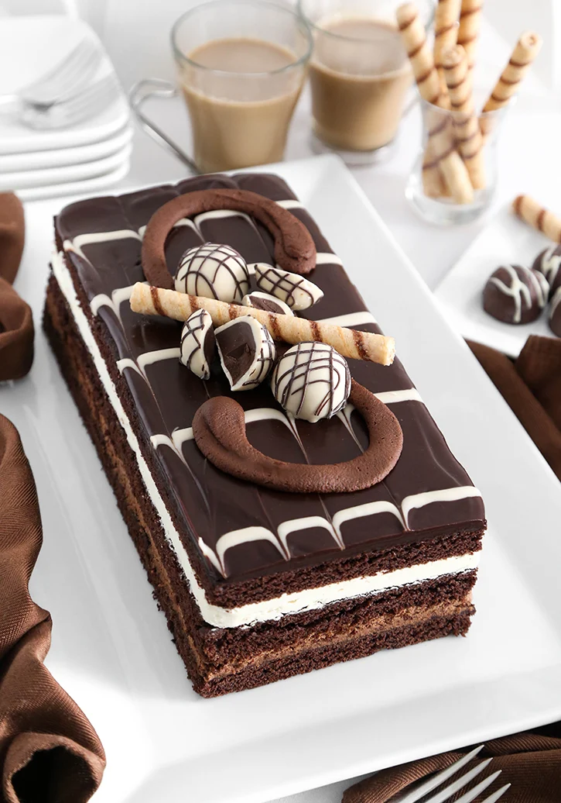

Tuxedo Bar Cake
Rich and elegant, this homemade Tuxedo Bar Cake has layers of moist chocolate cake, light chocolate mousse, and smooth vanilla cream cheese filling. It's all topped with a glossy ganache and delicate feathered glaze. It's the perfect crowd-pleaser for special occasions, with flavors that outshine store-bought versions.
Ingredients
For the Chocolate Cake Layers
- 1 cup unsalted butter (cubed)
- 1 cup water
- ⅓ cup unsweet dark cocoa powder
- 2 cups all-purpose flour
- 1 ½ cups light brown sugar (packed)
- 2 teaspoons espresso powder (optional)
- 1 teaspoon baking soda
- ½ teaspoon fine grain sea salt
- ½ cup buttermilk (room temperature)
- 2 large eggs (room temperature)
- 1 teaspoon vanilla extract
For the White Chocolate Mousse
- 1 cup heavy cream
- 2 oz. instant chocolate pudding mix (about ½ of a 3.9 oz. box)
Vanilla Cream Cheese Layer
- 4 oz. cream cheese
- 3 oz. white chocolate melted and cooled slightly (such as Baker's brand)
- ⅓ cup unsalted butter at room temperature
- ½ tablespoon lemon juice
- ⅓ cup confectioners' sugar
- 1 teaspoon vanilla extract
Marbled ganache topping
- 1 cup semisweet chocolate chips (or finely chopped semisweet chocolate)
- ½ cup heavy cream
- 1 tablespoon sunflower oil (of vegetable oil)
- ½ cup confectioners' sugar
- 1 tablespoon milk (plus more if needed)
Chocolate buttercream and décors
- 3 tablespoons unsalted butter (at room temperature)
- ½ cup confectioners' sugar
- 2 tablespoons unsweet cocoa powder
- Milk or cream to thin
- 1 rolled cookie wafer (such as Pirouette)
- 3 fancy chocolate truffles (store-bought)
Instructions
Cake
- Preheat the oven to 350°F. Grease a 17x11 inch rimmed baking sheet and line with parchment paper.
- In a medium saucepan, combine the butter, water, and cocoa. Heat over medium-low and whisk occasionally until the butter is melted and the mixture is smooth. Do not boil. Remove from the heat and let cool until slightly warm, about 15 minutes.
- In a mixing bowl, whisk together flour, brown sugar, espresso powder (if using), baking soda, and salt. If lumps of brown sugar remain, work them into the flour mixture with your fingers. When the mixture is smooth, make a well in the center.
- In a large glass measure with a pour spout (or a small bowl) whisk together the buttermilk, eggs, and vanilla. Add the buttermilk mixture to the cooled chocolate mixture in the saucepan, whisking constantly. Add the contents of the saucepan to the dry ingredients and beat until smooth. Scrape down the bowl and beat again briefly.
- Pour the batter into the prepared pan, spreading evenly. Tap the pan on a countertop to release trapped air bubbles and to level the batter.
- Bake for 18-20 minutes or until a toothpick tester inserted in the center comes out clean. Let cool. The cake should pull away slightly from the sides of the pan, but if it doesn’t, run a knife around the edges of the pan.
- Freeze the cooled cake until firm, at least 30 minutes and up to overnight.
- Invert the frozen cake onto a work surface. If it holds in the pan, let it warm at room temperature for 5 minutes and try again. Pull away the parchment paper; discard paper. Trim the cake so that you have three 11x5 rectangles. (You will have some cake scraps to snack on.) Cover the cake layers with plastic wrap while you make the fillings.
Chocolate Mousse Layer
- Place the heavy cream and instant pudding mix in a large bowl. Beat together with an electric mixer until very thick and fluffy, about 3 minutes.
- Place one cake layer on a serving platter and fill with the chocolate mousse; spread evenly. Top with a second cake layer.
Vanilla Cream Cheese Layer
- In the bowl of an electric mixer, beat the cream cheese on high speed for 2 minutes. Add the white chocolate and beat until smooth. Scrape down the sides of the bowl as needed.
- Add the butter and lemon juice; beat well to incorporate. Reduce speed to low and add the confectioners’ sugar, mixing until well blended. Beat in the vanilla extract. Cover and set aside.
- Add the vanilla cream cheese filling and spread evenly. Top with the final cake layer. Transfer the cake to the refrigerator while you prepare the ganache topping.
Marbled Ganache Topping
- For the ganache, place the chocolate chips, heavy cream, and oil in a microwave-safe bowl. Heat at 100% power for 1 minute. Let the mixture stand for 1 minute. Whisk together until a shiny ganache forms.
- For the white confectioners’ glaze, place the confectioners’ sugar and milk in a small bowl. Whisk together until combined. The mixture should easily fall from a spoon in a thin ribbon. If it’s too thick, add additional milk 1/4 teaspoon at a time until the correct consistency is achieved. Transfer to a piping bag or to a zip-top bag with a small hole in the corner snipped.
- Pour the ganache over the top of the cake, carefully spreading so it doesn’t fall over the sides too much (it’s okay if this happens though). Add lines of the white glaze to the top of the cake and marble with the tip of a butter knife (see video for action). Refrigerate while you prepare the chocolate buttercream.
Chocolate Buttercream and Décors
- In the bowl of an electric mixer (a hand mixer is fine here) combine the unsalted butter, confectioners’ sugar and cocoa powder. Mix until combined then add milk 1 tablespoon at a time, while mixing, to thin to piping consistency. Beat until combined and fluffy.
- Transfer the buttercream to a piping bag with a plain round ½” decorator tip, or a ½” hole snipped in the end of the bag.
- Remove the cake from the refrigerator. Pipe a large sweeping ‘S’ shaped scroll from one short end of the cake to the other (see video for action). Arrange the wafer cookie in the center, with truffles arranged around the cookie. Refrigerate until ready to serve. Bring to room temperature for best texture and flavor.
- Cake will keep for up to 1 week in the refrigerator.